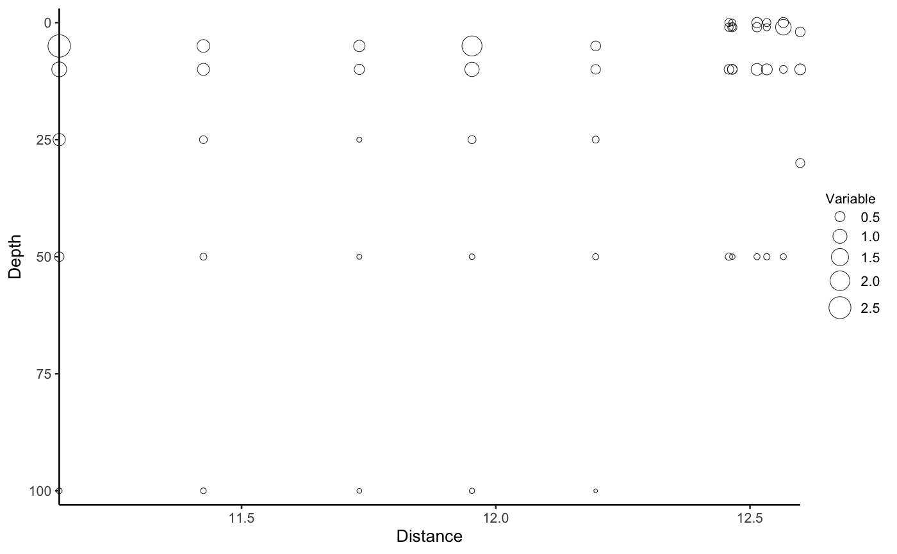
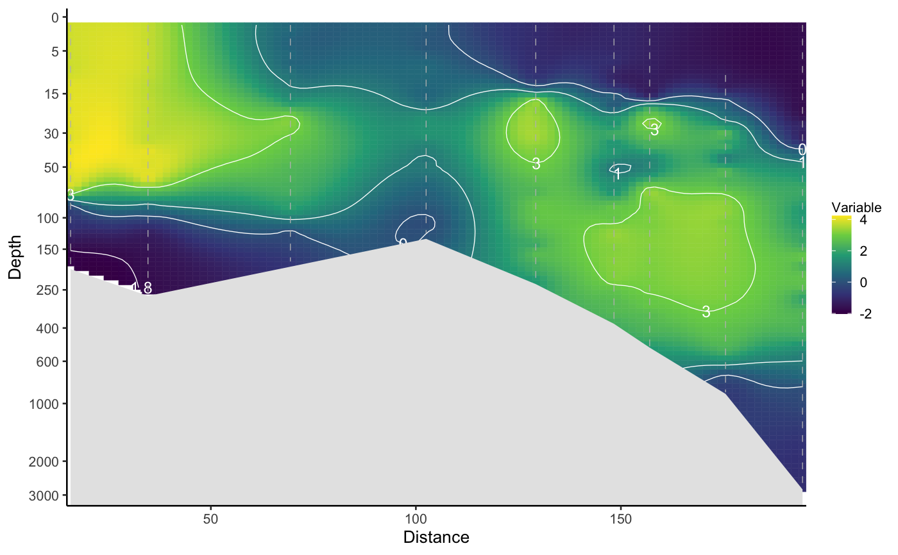

R/section_plot.R
section_plot.RdCreates an oceanographic section plot from a data frame using ggplot2. Returns either an interpolated section or a bubble plot.
section_plot( df, x, y, z, bottom = NULL, interpolate = FALSE, interp_method = "mba", log_y = FALSE, xlab = "Distance", ylab = "Depth", zlab = "Variable", ybreaks = waiver(), xbreaks = waiver(), zbreaks = waiver(), contour = NULL, contour_label_cex = 0.8, contour_color = "white", xlim = NULL, ylim = NULL, zlim = NULL, zscale = "viridis", zcolor = "black", add_bottom = NULL, sampling_indicator = "lines", legend.position = "right", base_size = 10, ... )
| df | Data frame containing the data |
|---|---|
| x | Character specifying the column name which should be used as x (=distance) axis |
| y | Character specifying the column name which should be used as y (=depth) axis. The y axis will be inverted in the resulting plot. |
| z | Character specifying the column name which should be for bubbles or interpolation fill depending on the |
| bottom | Optional character specifying the column name which contains bottom depths OR a data frame with x-axis values in the first column and bottom depths in the second column. If provided, unique combinations of |
| interpolate | Logical indicating whether an interpolated section plot ( |
| interp_method | ( |
| log_y | logical indicating whether the y-axis should be |
| xlab, ylab, zlab | Character specifying the labels for the x-axis, y-axis and legend, respectively. |
| xbreaks, ybreaks, zbreaks | Numeric vector specifying the breaks for the x-axis, y-axis and legend. See scale_continuous. |
| contour | ( |
| contour_label_cex | Numeric giving the |
| contour_color | Character defining the color to be used for contour lines and labels. |
| xlim, ylim | Numeric vector of length two providing limits of the scale. Use NA to refer to the existing minimum or maximum. Use |
| zlim | Numeric vector of length two providing limits for fill or bubble size. Any values outside these limits will get the extreme values defined by |
| zscale | ( |
| zcolor | ( |
| add_bottom | Numeric vector of length two providing the depths that should be added to |
| sampling_indicator | (
|
| legend.position | Position for the ggplot legend. See the argument with the same name in theme. |
| base_size | Base size parameter for ggplot. See theme_bw. |
| ... | Additional arguments passed to color and size scales. See |
Returns either an interpolated section (geom_tile) or a bubble (geom_point) ggplot2 object.
Note that you can use the ggplot2 color and size scale arguments to adjust the scales as you want. Just place them inside the section_plot function. See scale_colour_gradient2, scale_colour_viridis_c and scale_size.
# Bubble plots section_plot(df = chlorophyll[grepl("KpN.|Kb[0-4]", chlorophyll$Station),], x = "lon", y = "From", z = "Chla")# Interpolated CTD sections ## Standard temperature section plot. Difficult to see surface due to large differences in y-scale section_plot(ctd_rijpfjord, x = "dist", y = "pressure", z = "temp", bottom = "bdepth", interpolate = TRUE)## Logarithmic y axis section_plot(ctd_rijpfjord, x = "dist", y = "pressure", z = "temp", bottom = "bdepth", interpolate = TRUE, log_y = TRUE)## Contour lines section_plot(ctd_rijpfjord, x = "dist", y = "pressure", z = "temp", bottom = "bdepth", interpolate = TRUE, log_y = TRUE, contour = c(-1.8, 0, 1, 3))#> Warning: Removed 2381 rows containing non-finite values (stat_contour).